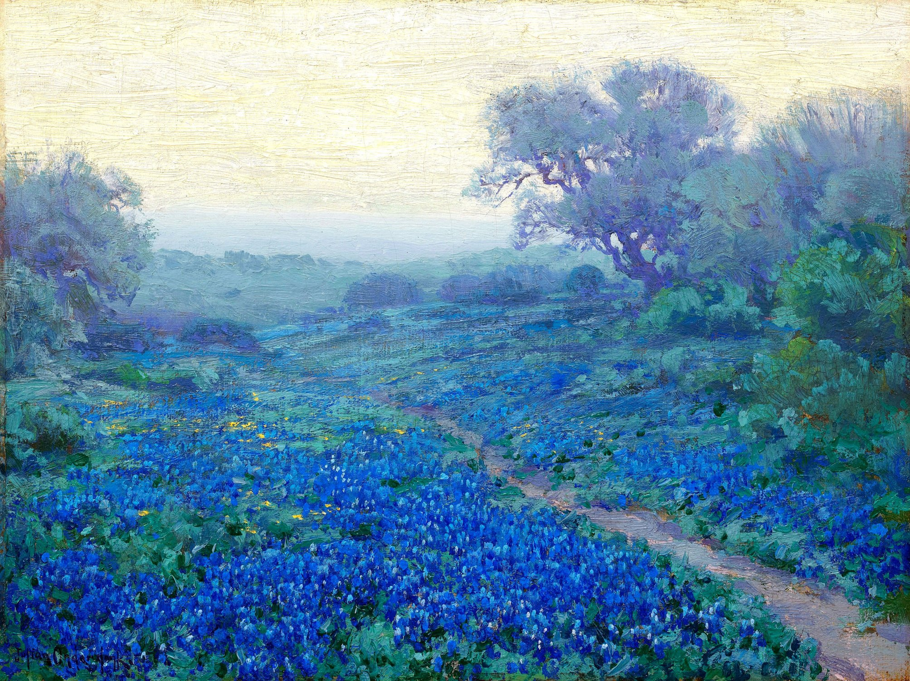
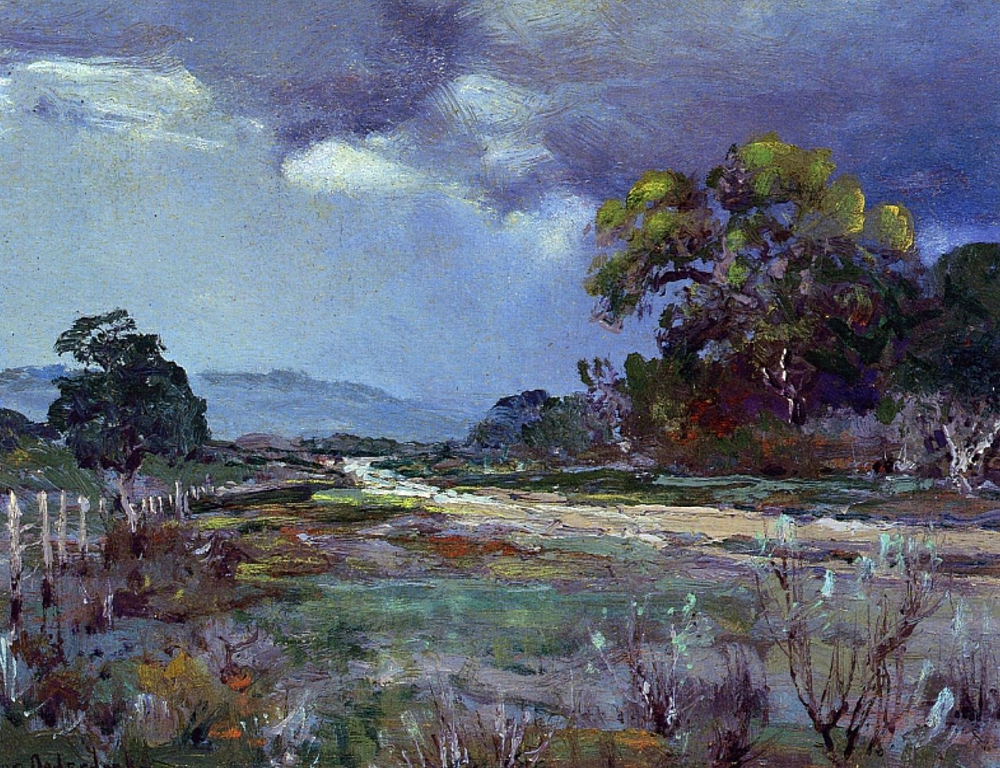
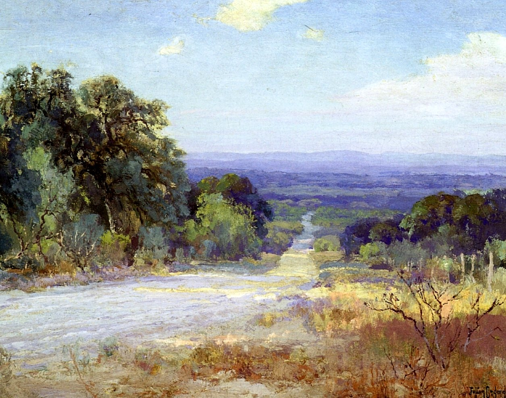
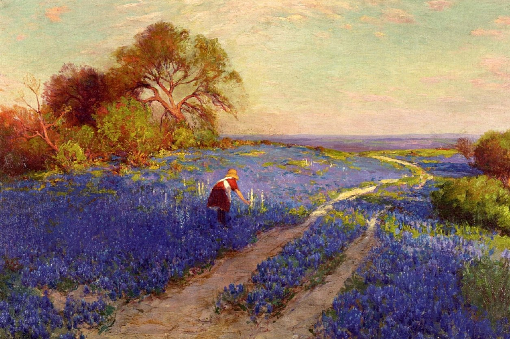
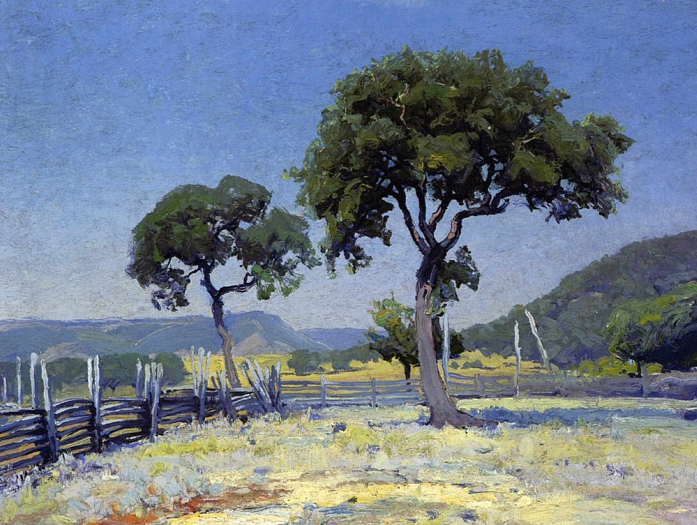
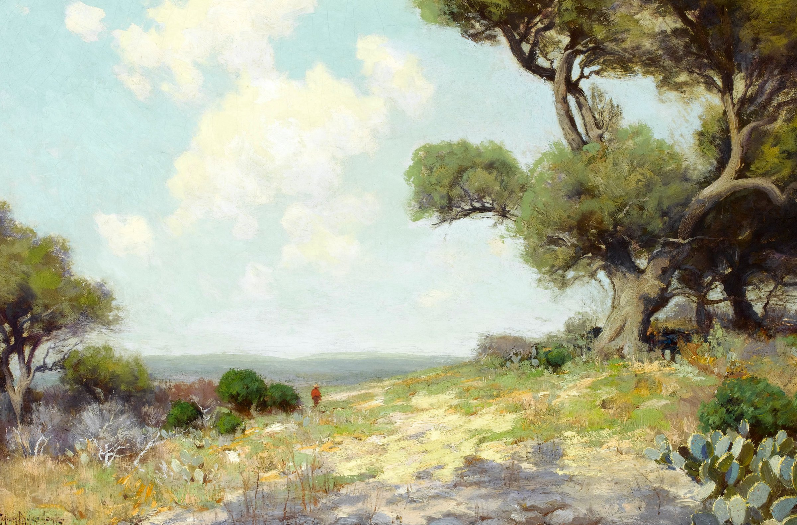
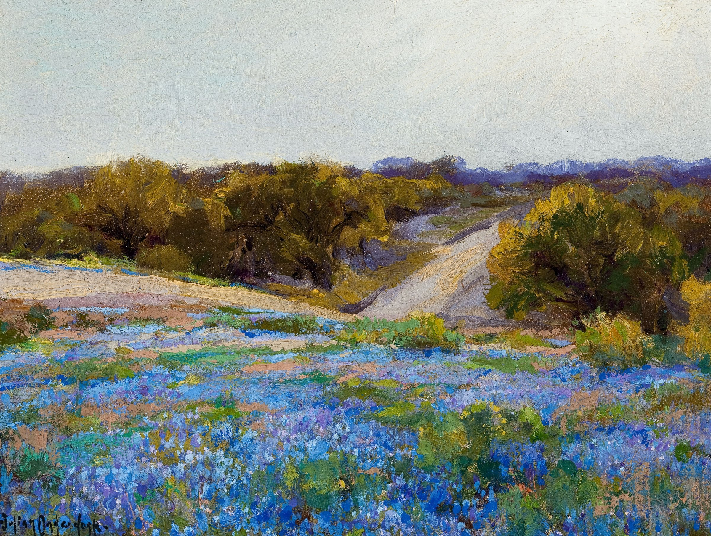

<title>Texans for Lange</title>
<meta name="claude:viewport-fit-sides" content="cover">
<link rel="preconnect" href="https://fonts.googleapis.com">
<link rel="preconnect" href="https://fonts.gstatic.com" crossorigin>
<link href="https://fonts.googleapis.com/css2?family=Geist:wght@300;400;500&family=Geist+Mono:wght@400&display=swap" rel="stylesheet">
<style>
  /* Expressive Space: Geist, pale steel, one green, black for emphasis. 1920×1080 slides scaled to the screen. */
  :root {
    --paper: #F2F7FA;
    --mist: #E4EDF2;
    --line: #D6E0E6;
    --ink: #000000;
    --ink-2: #2B2F33;
    --muted: #6B7680;
    --green: #269731;
    --green-bright: #3DB54A;
    --night: #0A0A0A;
    --stage: #1A1A1A;
    --on-dark: #FFFFFF;
    --on-dark-2: #D9D9D9;
    --W: 1920px;
    --H: 1080px;
    --pad: 130px;
    --sans: "Geist", "Inter", system-ui, sans-serif;
    --mono: "Geist Mono", ui-monospace, monospace;
  }
  * { box-sizing: border-box; margin: 0; padding: 0; }
  html, body { background: var(--stage); }
  body {
    font-family: var(--sans); color: var(--ink); -webkit-font-smoothing: antialiased;
    padding-block: 24px;
    padding-left: max(16px, env(safe-area-inset-left, 0px));
    padding-right: max(16px, env(safe-area-inset-right, 0px));
    overflow-x: hidden;
  }
  .wrap { overflow: hidden; margin: 0 auto 24px; }
  .slide {
    width: var(--W); height: var(--H);
    position: relative; overflow: hidden;
    background: var(--paper);
    transform-origin: top left;
  }
  .slide.mist { background: var(--mist); }
  .slide.dark { background: var(--night); color: var(--on-dark); }

  .tag { font-size: 22px; letter-spacing: .22em; text-transform: uppercase; font-weight: 400; color: var(--ink-2); }
  .dark .tag { color: #CFCFCF; }
  h1, h2 { font-weight: 300; letter-spacing: -0.035em; line-height: 1.02; text-wrap: balance; }
  h1 { font-size: 168px; }
  h2 { font-size: 92px; }
  .g { color: var(--green); }
  .dark .g { color: var(--green-bright); }
  .lede { font-size: 34px; font-weight: 300; line-height: 1.35; color: var(--ink-2); letter-spacing: -0.01em; }
  .dark .lede { color: var(--on-dark-2); }
  .num { font-family: var(--mono); font-size: 20px; letter-spacing: .08em; text-transform: uppercase; color: var(--muted); }
  .cap { font-family: var(--mono); font-size: 16px; letter-spacing: .04em; color: var(--muted); }
  .cap.on-dark { color: rgba(255,255,255,.8); }

  .art { position: absolute; overflow: hidden; }
  .fill { width: 100%; height: 100%; object-fit: cover; display: block; max-width: none; }
  .grid { position: absolute; inset: 0; background-image: repeating-linear-gradient(90deg, transparent 0 207px, var(--line) 207px 208px); opacity: .7; }

  /* Problem list */
  .rows { display: grid; gap: 0; margin-top: 52px; border-top: 1px solid var(--line); }
  .row { display: grid; grid-template-columns: 70px 1fr; gap: 10px; padding: 26px 0; border-bottom: 1px solid var(--line); }
  .row b { display: block; font-weight: 400; font-size: 32px; letter-spacing: -0.01em; margin-bottom: 8px; }
  .row p { font-size: 25px; line-height: 1.4; font-weight: 300; color: var(--ink-2); }

  /* Cards */
  .cards { position: absolute; left: var(--pad); right: var(--pad); display: grid; gap: 30px; }
  .card { background: var(--paper); border: 1px solid #fff; box-shadow: 0 18px 50px rgba(30,50,70,.08); display: flex; flex-direction: column; overflow: hidden; }
  .card .hd { display: flex; justify-content: space-between; align-items: baseline; padding: 36px 38px 20px; border-bottom: 1px solid var(--line); font-size: 32px; letter-spacing: -0.01em; }
  .card .bd { padding: 30px 38px 36px; font-size: 26px; line-height: 1.38; color: var(--ink-2); font-weight: 300; }
  .card.black { background: #000; color: var(--on-dark); border-color: #000; }
  .card.black .hd { border-color: #2A2A2A; }
  .card.black .bd { color: #E2E2E2; }
  .card.black .num { color: rgba(255,255,255,.55); }

  .stat { padding: 40px 42px; justify-content: space-between; background: var(--paper); }
  .stat .big { font-size: 128px; font-weight: 300; letter-spacing: -.04em; line-height: 1; color: var(--green); font-variant-numeric: tabular-nums; }
  .stat.black .big { color: var(--green-bright); }
  .stat .lede { font-size: 30px; }
  .stat.black .lede { color: #E2E2E2; }
  .stat .unit { font-size: .45em; letter-spacing: -.02em; margin-left: 6px; }
  /* Services list (slide 4) */
  .svc { margin-top: 56px; display: grid; grid-template-columns: 1fr 1fr; column-gap: 56px; border-top: 1px solid var(--line); }
  .svc > div { padding: 24px 0 26px; border-bottom: 1px solid var(--line); }
  .svc b { display: block; font-weight: 400; font-size: 32px; letter-spacing: -0.01em; margin-bottom: 6px; }
  .svc p { font-size: 24px; line-height: 1.4; font-weight: 300; color: var(--ink-2); }
  .svc .note { display: flex; align-items: center; }
  .svc .note p { font-size: 27px; color: var(--green); font-weight: 400; }

  /* KPI grid (slide 5) */
  .kpis { margin-top: 56px; display: grid; grid-template-columns: 1fr 1fr; column-gap: 56px; border-top: 1px solid var(--line); }
  .kpis > div { padding: 30px 0 32px; border-bottom: 1px solid var(--line); }
  .kpis .big { font-size: 120px; font-weight: 300; letter-spacing: -.04em; line-height: 1; color: var(--green); font-variant-numeric: tabular-nums; }
  .kpis .unit { font-size: .4em; letter-spacing: -.02em; margin-left: 6px; }
  .kpis p { margin-top: 14px; font-size: 28px; font-weight: 300; color: var(--ink-2); }
  /* How slide */
  .howbig { font-size: 72px; font-weight: 300; letter-spacing: -.04em; line-height: 1; color: var(--green); }
  .aud .pic { flex: 1; position: relative; overflow: hidden; margin: 22px 34px 0; min-height: 0; }
  .aud .pic img { width: 100%; height: 100%; object-fit: cover; display: block; max-width: none; }
  .aud .hd { padding: 28px 34px 18px; }
  .aud .bd { padding: 22px 34px 26px; font-size: 24px; }
  .aud .big { font-size: 84px; font-weight: 300; letter-spacing: -.04em; line-height: 1; color: var(--green); margin-bottom: 8px; }
  .aud.black .big { color: var(--green-bright); }
  .cardcap { display: block; margin-top: 10px; }
  .trio { grid-column: 1 / -1; display: grid; grid-template-columns: repeat(3, 1fr); column-gap: 30px; border-top: 1px solid var(--line); }
  .trio > div { padding-top: 20px; }
  .trio .big { font-size: 64px; font-weight: 300; letter-spacing: -.04em; line-height: 1; color: var(--green); font-variant-numeric: tabular-nums; }
  .trio p { margin-top: 8px; font-size: 24px; font-weight: 300; color: var(--ink-2); }
</style>

<!-- 1 · Title -->
<section class="slide">
  <div class="grid" style="right: 760px;"></div>
  <div style="position:absolute; left: var(--pad); top: 230px; width: 960px;">
    <div class="tag">[ Case study · Campaign director ]</div>
    <h1 style="margin-top: 56px;">Texans for<br><span class="g">Lange</span></h1>
    <p class="lede" style="margin-top: 56px; max-width: 820px;">A first-time candidate, a statewide race and a pandemic. How we put a new name in front of Texas.</p>
    <p class="cap" style="margin-top: 44px; font-size: 20px;">Hakeem · Expressive Space</p>
  </div>
  <div class="art" style="right:0; top:0; width:760px; height:100%;">
    
  </div>
  <div class="cap on-dark" style="position:absolute; right: 36px; bottom: 30px; background: rgba(0,0,0,.55); padding: 6px 10px;">[ Julian Onderdonk, Bluebonnets at Sunrise, 1917 ]</div>
</section>

<!-- 2 · The challenge -->
<section class="slide">
  <div style="position:absolute; left: var(--pad); top: 0; bottom: 0; width: 860px; display:flex; flex-direction:column; justify-content:center;">
    <div class="tag">[ The challenge ]</div>
    <h2 style="margin-top: 40px; font-size: 80px;">A new name, in the year <span class="g">no one could shake hands.</span></h2>
    <div class="rows">
      <div class="row"><span class="num">[ A ]</span><div><b>No name recognition</b><p>Michael's first run for office, launched in the middle of COVID.</p></div></div>
      <div class="row"><span class="num">[ B ]</span><div><b>Virtual events fell flat</b><p>Online town halls couldn't build the trust a room full of people does.</p></div></div>
      <div class="row"><span class="num">[ C ]</span><div><b>No support</b><p>One month in, the campaign director fell ill. Michael was left running it alone.</p></div></div>
    </div>
  </div>
  <div class="art" style="right: var(--pad); top: 286px; width: 760px; height: 470px;">
    
  </div>
  <div class="cap" style="position:absolute; right: var(--pad); top: 774px; width: 760px;">[ Julian Onderdonk, Approaching Rain, Southwest Texas, 1922 ] A lot of ground to cover, and weather coming in.</div>
</section>

<!-- 3 · The approach -->
<section class="slide dark">
  <div class="art" style="inset: 0 0 0 auto; width: 1180px;">
    
  </div>
  <div style="position:absolute; inset:0; background: linear-gradient(90deg, #0A0A0A 0%, #0A0A0A 38%, rgba(10,10,10,.78) 55%, rgba(10,10,10,0) 80%);"></div>
  <div style="position:absolute; left: var(--pad); top: 0; bottom: 0; width: 1100px; display:flex; flex-direction:column; justify-content:center;">
    <div class="tag">[ The approach ]</div>
    <h2 style="margin-top: 50px; font-size: 100px;">A campaign that works as hard as <span class="g">the campaigner.</span></h2>
    <p class="lede" style="margin-top: 50px; max-width: 860px;">I stepped in as campaign director and ran everything behind the scenes, so Michael could do what he does best: campaign. When the work behind him matched the work he put in, his effort went just as far.</p>
  </div>
  <div class="cap on-dark" style="position:absolute; right: 36px; bottom: 30px; background: rgba(0,0,0,.55); padding: 6px 10px;">[ Julian Onderdonk, A White Road at Late Afternoon, 1921 ]</div>
</section>

<!-- 3b · How -->
<section class="slide">
  <div style="position:absolute; left: var(--pad); top: 0; bottom: 0; width: 760px; display:flex; flex-direction:column; justify-content:center;">
    <div class="tag">[ How ]</div>
    <h2 style="margin-top: 36px; font-size: 76px;">Most candidates work only the top 10 counties. <span class="g">We went where the impact was greatest.</span></h2>
    <p class="lede" style="margin-top: 36px; font-size: 28px;">We focused on underserved areas that rarely see a statewide campaign, where showing up counted most.</p>
    <div class="rows" style="margin-top: 40px;">
      <div class="row" style="grid-template-columns: 170px 1fr; align-items: baseline;"><span class="howbig">80+</span><div><b>Appearances</b><p>In the counties other campaigns skip.</p></div></div>
      <div class="row" style="grid-template-columns: 170px 1fr; align-items: baseline;"><span class="howbig" style="font-size: 40px;">Local</span><div><b>Micro-local club sponsors</b><p>Very local clubs in each community backing the campaign.</p></div></div>
    </div>
  </div>

  <div style="position:absolute; left: 990px; right: var(--pad); top: 130px; bottom: 130px; display:grid; grid-template-columns: 1fr 1fr; grid-template-rows: 1fr auto; gap: 30px;">
    <div class="card aud">
      <div class="hd"><span>Gen Z</span><span class="num">[ Social ]</span></div>
      <div class="pic"></div>
      <div class="bd"><div class="big">5M</div>views on fun, fast reels<span class="cap cardcap">[ Onderdonk, Bluebonnet Scene with a Girl, 1920 ]</span></div>
    </div>
    <div class="card aud black">
      <div class="hd"><span>Boomers</span><span class="num">[ Paid ]</span></div>
      <div class="pic"></div>
      <div class="bd"><div class="big">10M</div>views on paid Facebook<span class="cap cardcap on-dark">[ Onderdonk, Live Oaks, Bandera County, 1915 ]</span></div>
    </div>
    <div class="trio">
      <div><div class="big">350</div><p>Pieces of content</p></div>
      <div><div class="big">12</div><p>Podcasts</p></div>
      <div><div class="big">12</div><p>Radio appearances</p></div>
    </div>
  </div>
</section>

<!-- 4 · What we built -->
<section class="slide mist">
  <div class="art" style="left: 0; top: 0; bottom: 0; width: 620px;">
    
  </div>
  <div class="cap on-dark" style="position:absolute; left: 24px; bottom: 30px; background: rgba(0,0,0,.55); padding: 6px 10px;">[ Julian Onderdonk, In the Hills, Southwest Texas, 1912 ]</div>
  <div style="position:absolute; left: 740px; right: var(--pad); top: 0; bottom: 0; display:flex; flex-direction:column; justify-content:center;">
    <div class="tag">[ What I ran ]</div>
    <h2 style="margin-top: 36px; font-size: 84px;">Seven jobs. <span class="g">One director.</span></h2>
    <div class="svc">
      <div><b>Brand design</b><p>A visual identity built to make a new name stick.</p></div>
      <div><b>Messaging</b><p>One clear story Michael could tell in any county.</p></div>
      <div><b>Website</b><p>Home base for voters, volunteers and donors.</p></div>
      <div><b>Event strategy</b><p>Routing and booking in-person stops, week after week.</p></div>
      <div><b>Content creation</b><p>Photo and video from the road, shared the same day.</p></div>
      <div><b>Paid media</b><p>Targeted ads that took each stop far past the room.</p></div>
      <div><b>Social</b><p>Always-on channels that kept the conversation going.</p></div>
      <div class="note"><p>All of it ran behind the scenes, so Michael could stay in front of voters.</p></div>
    </div>
  </div>
</section>

<!-- 5 · Results -->
<section class="slide">
  <div class="art" style="left: 0; top: 0; bottom: 0; width: 760px;">
    
  </div>
  <div style="position:absolute; left: 0; top: 0; bottom: 0; width: 760px; background: linear-gradient(0deg, rgba(10,10,10,.88) 0%, rgba(10,10,10,.55) 45%, rgba(10,10,10,.05) 75%);"></div>
  <div style="position:absolute; left: 80px; right: 60px; bottom: 120px; color: var(--on-dark);">
    <div style="font-size: 220px; font-weight: 300; letter-spacing: -.05em; line-height: .9; color: var(--green-bright);">350K</div>
    <p style="margin-top: 24px; font-size: 38px; font-weight: 300; line-height: 1.25; color: var(--on-dark-2);">Texans voted for Lange statewide.</p>
  </div>
  <div class="cap on-dark" style="position:absolute; left: 80px; bottom: 44px;">[ Julian Onderdonk, Bluebonnets at Late Afternoon ]</div>

  <div style="position:absolute; left: 880px; right: var(--pad); top: 0; bottom: 0; display:flex; flex-direction:column; justify-content:center;">
    <div class="tag">[ Results ]</div>
    <h2 style="margin-top: 36px; font-size: 84px;">From unknown to <span class="g">a name Texas knew.</span></h2>
    <div class="kpis">
      <div><div class="big">100</div><p>Counties visited</p></div>
      <div><div class="big">10<span class="unit">/ week</span></div><p>Events, on average</p></div>
      <div><div class="big">15M</div><p>Views across paid and social media</p></div>
      <div><div class="big">150K</div><p>Website visitors</p></div>
    </div>
    <p style="margin-top: 56px; font-size: 26px;">Hakeem · Expressive Space · <span class="g">expressivespace.co</span></p>
  </div>
</section>

<script>
  // Fit each 1920px slide to the screen width
  const fit = () => {
    const k = Math.min(1, (document.body.clientWidth - 32) / 1920);
    document.querySelectorAll('.slide').forEach(sl => {
      let w = sl.parentElement.classList.contains('wrap') ? sl.parentElement : null;
      if (!w) { w = document.createElement('div'); w.className = 'wrap'; sl.before(w); w.appendChild(sl); }
      sl.style.transform = `scale(${k})`;
      w.style.width = 1920 * k + 'px'; w.style.height = 1080 * k + 'px';
    });
  };
  fit();
  window.addEventListener('load', fit);
  window.addEventListener('resize', fit);
</script>
